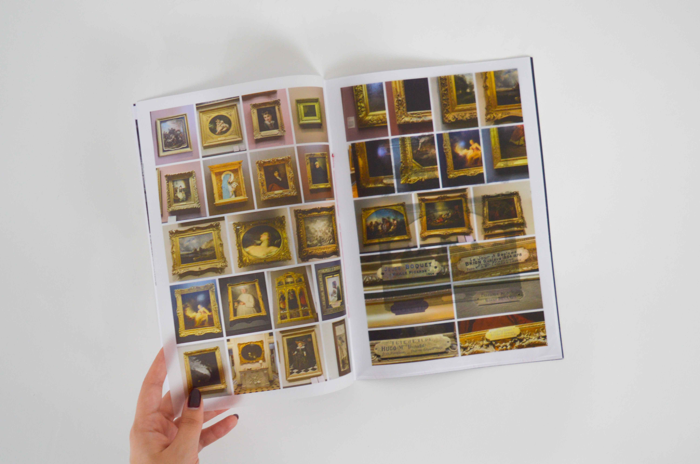
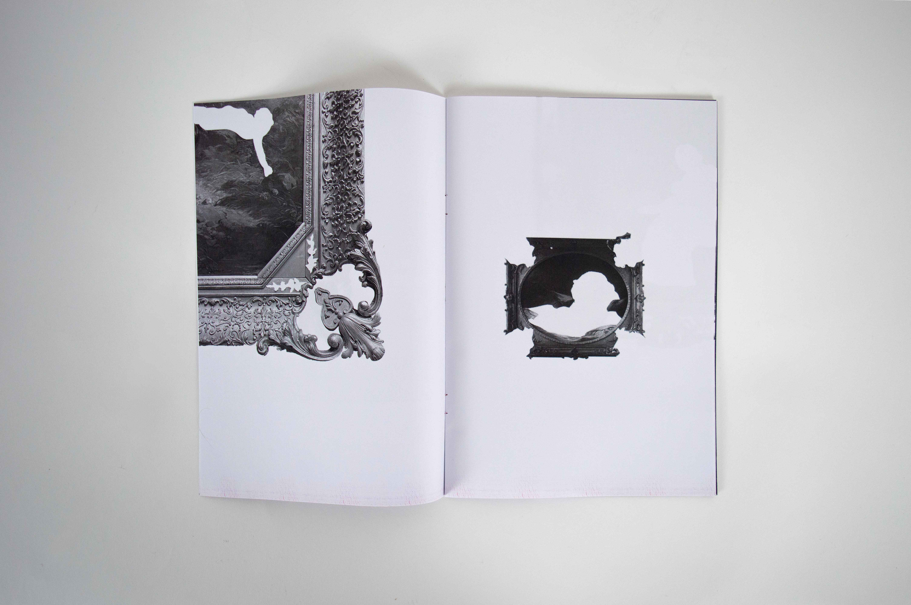
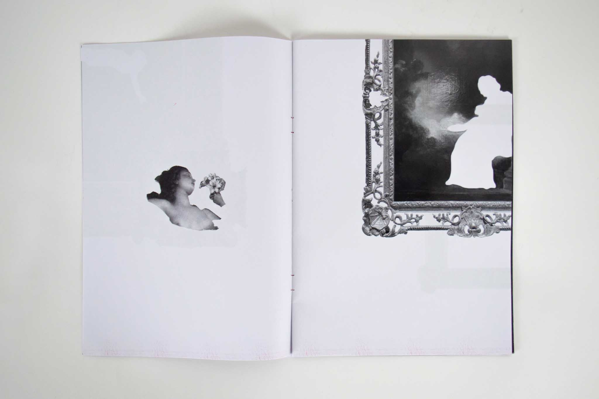
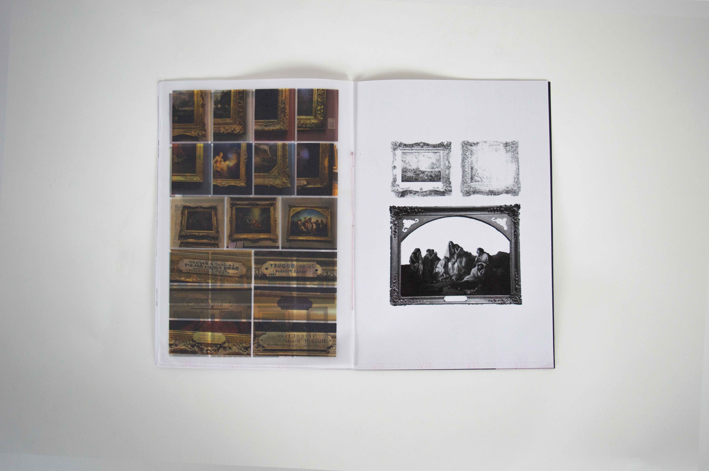
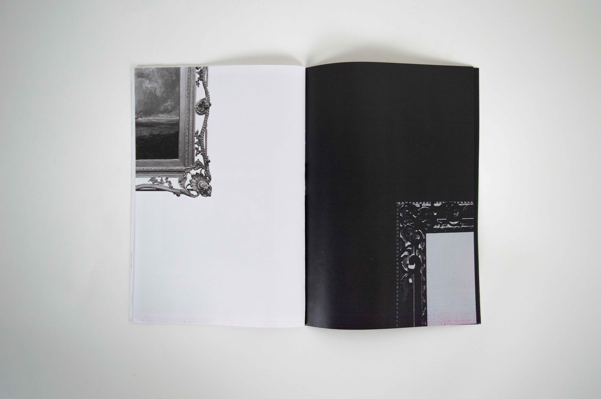
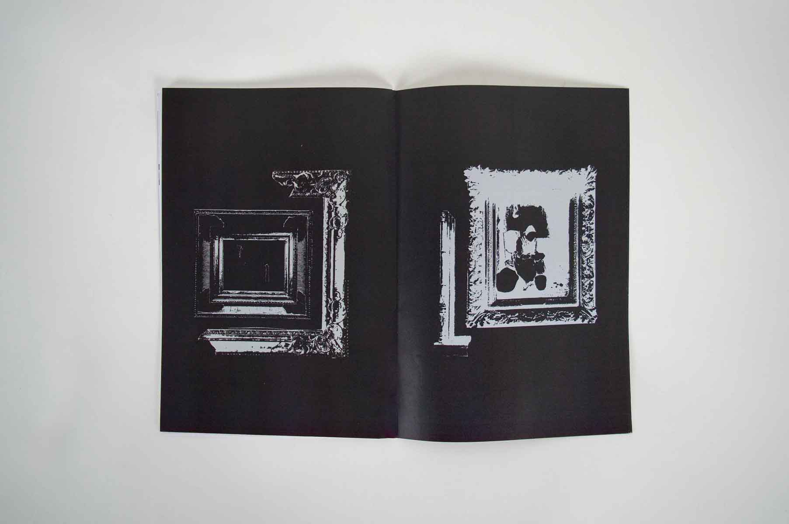
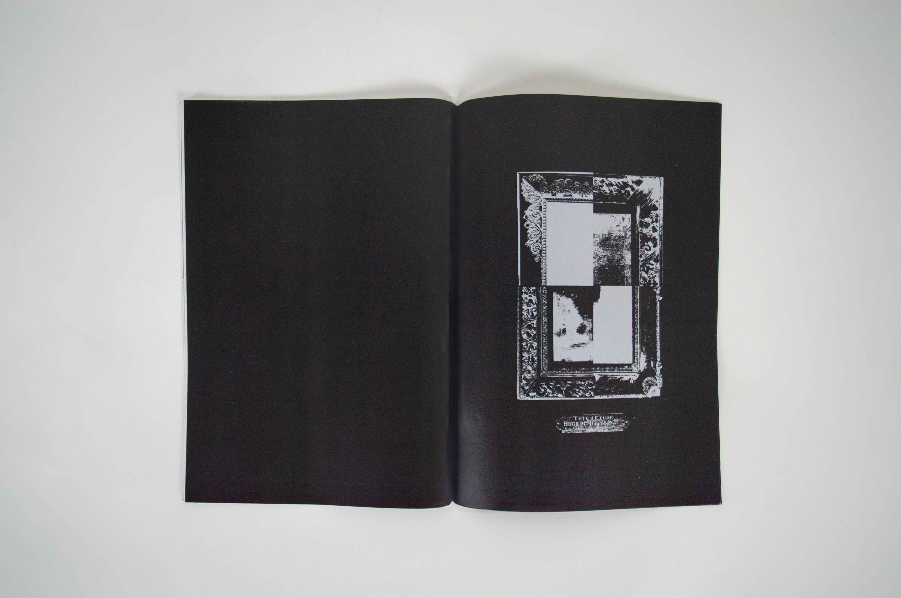
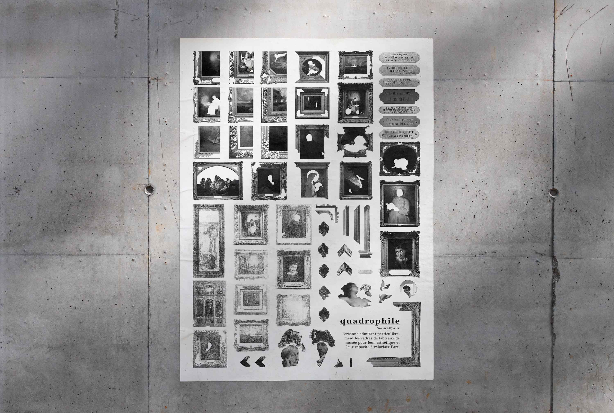

sophie ndb
quadrophile
Réalisation d’une collection autour des cadres ornementaux. Je questionne la place qu’ils occupent dans la lecture d’une image, et la manière dont leur présence peut parfois éclipser l’œuvre qu’ils entourent. Les ornements me fascinent par leurs détails et leur richesse.
Images : Transfert de photo sur papier au dissolvant, découpage au cutter de précision
Édition : papier calque, reliure cousue, 80g, 14 pages, format A4
Affiche : 60 x 80 cm







